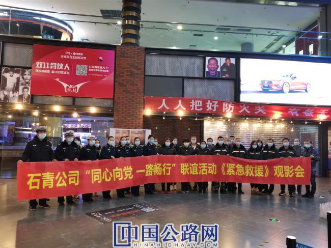

微官网
微官网

为不断巩固深化“路警一体化”合作机制，12月31日，河北石太高速党委办公室联合河北省公安厅高速交警总队石家庄大队、河北省高速公路路政总队石太支队相关人员共同组织开展“同心向党、一路畅行”路警共建联谊活动——《紧急救援》观影会。
电影《紧急救援》是由交通运输部指导拍摄而成，目前已在全国公映。影片取材自真实海上救援事件，通过讲述王牌特勤队员们与其他救捞人直面重大灾难的挑战，一同执行惊险海上救援任务的故事，充分弘扬了“把生的希望送给别人、把死的危险留给自己”的救捞精神，塑造了我国交通救捞队伍英雄形象,是一部思想性、故事性、艺术性、观赏性有机统一的优秀作品。
观影结束后，大家一致认为此影片对振奋精神、鼓舞士气、坚定信心有一定的促进作用，精神上得到了一次洗礼。大家纷纷表示在接下来的工作中将进一步加强路警协同合作，以党建先行推动路警协同发展，以路警通行为维护道路运输安全、群众便捷出行做出更大贡献。
据悉，为推进党的基层组织设置和活动方式创新，深化“路警一体化”合作成果，共同创造安全、畅通、高效、有序的高速公路通行环境，石青公司、河北省公安厅高速交警总队石家庄大队、河北省高速公路路政总队石太支队三家协商，于11月初就路警党组织合作共建相关事宜签订了共建协议，统筹工作谋划，明确责任分工。此次观影活动是落实 “路警一体化”机制要求的有效载体，对密切路警关系，加强协同合作，凝聚双方力量起到了积极推进作用。